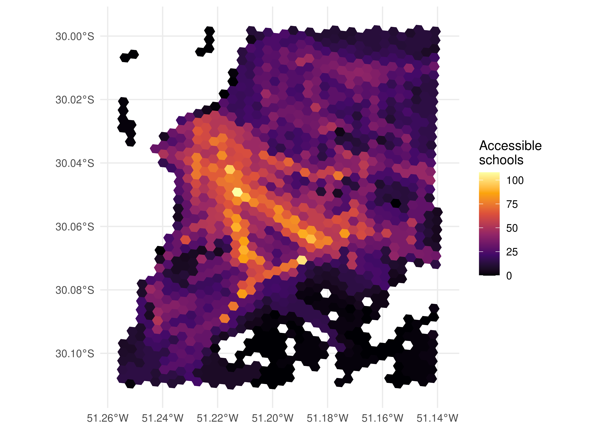
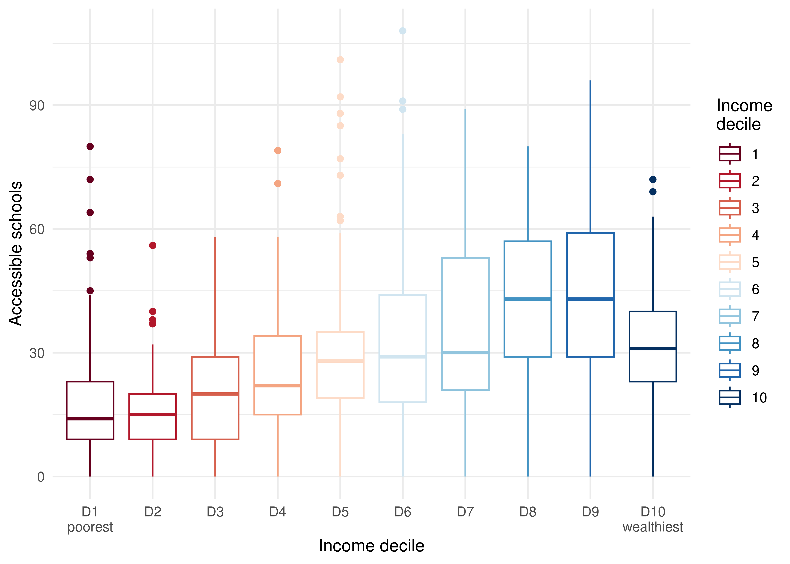

install.packages("r5r")3 Calculating accessibility estimates in R
3.1 Calculating a travel time matrix
The first step to estimate the accessibility levels in a study area is to calculate the travel cost matrix between the various origins and destinations that make up this area. As previously mentioned, in the scientific literature and in transport planning practice this cost is generally represented by the travel time between two points (El-Geneidy et al. 2016; Venter 2016), although recent studies have also considered other factors, such as trip monetary costs and the comfort of a trip between origins and destinations (Arbex and Cunha 2020; Herszenhut et al. 2022). In this book, we will focus on travel time matrices as they are the most widely used in the literature and in practice, and we will cover other types of costs in a future book on advanced accessibility analysis in R.
Currently, the easiest and fastest way to generate a travel time matrix in R is using the {r5r} package (Pereira et al. 2021), developed by the Access to Opportunities Project team. The package provides a simple and friendly interface to the R5 multimodal transport routing engine, developed by Conveyal1.
3.1.1 Installing {r5r}
Installing {r5r} works the same as installing any other R package (all code snippets from this point onward must be run in an R session).
In addition to R, {r5r} also requires installing Java 112. Use the command below to check the version of Java installed in your computer.
cat(processx::run("java", args = "-version")$stderr)openjdk version "11.0.19" 2023-04-18 LTS
OpenJDK Runtime Environment Zulu11.64+19-CA (build 11.0.19+7-LTS)
OpenJDK 64-Bit Server VM Zulu11.64+19-CA (build 11.0.19+7-LTS, mixed mode)As we can see, the version installed in the book is compatible with {r5r}. If the version installed in your machine is not compatible (i.e. if running the code above results in an output mentioning version 12 or 1.8.0, for example), please install Java 11.
3.1.2 Required data
Using {r5r} requires different types of data. The list below describes the required and optional data sets and indicates where you could obtain these data:
-
Street network (required): a file in
.pbfformat containing the street network and pedestrian infrastructure as described by OpenStreetMap. It can be downloaded using:-
{osmextract}, R package; - Geofabrik, website;
- HOT Export Tool, website;
- BBBike Extract Service, website.
-
OpenStreetMap data quality
OpenStreetMap (OSM) is a geographic database that provides information about street networks, buildings, parks, etc. OSM is maintained by a community of volunteers, so the coverage and quality of its data can widely vary between regions (Barrington-Leigh and Millard-Ball 2017). OSM data tend to have better coverage and quality in more developed regions and in urban areas with large populations (Barrington-Leigh and Millard-Ball 2017; Camboim, Bravo, and Sluter 2015).
-
Public transport network (optional): one or more GTFS files describing the public transport network of the study area. If absent, public transport trips are not considered in the travel time matrix. This type of data can be downloaded using:
-
{tidytransit}, R package; - Transitland, website;
- In Chapter 4 (Table 4.9) we also show where to download the GTFS files of Brazilian cities that share their data publicly.
-
-
Topography (optional): a raster file containing the Digital Elevation Model data of the study area in
.tif/.tiffformat. This data set is required if you wish to consider the effects of topography on walking and cycling travel times. It can be downloaded using:
These data sets should be saved in a single directory, which should preferably not contain any other files. As we will see below, {r5r} combines all the data saved in this directory to create a multimodal transport network that is used for routing trips between origin-destination pairs and, consequently, for calculating travel time matrices. Please note that you can have more than one GTFS file in the same directory, in which case {r5r} considers the public transport networks of all feeds together. The street network and the topography of the study area, however, must be each one described by a single file. Assuming that R scripts are saved in a directory called R, a possible file structure is shown below:
/tmp/RtmpViiI3n/accessibility_project
├── R
│ ├── script1.R
│ └── script2.R
└── r5
├── public_transport_network.zip
├── street_network.osm.pbf
└── topography.tifTo illustrate the features of {r5r}, we will use a small data sample from the city of Porto Alegre, Brazil. This data is available within {r5r} itself, and its path can be accessed with the following command:
data_path <- system.file("extdata/poa", package = "r5r")
data_path[1] "/home/runner/work/intro_access_book/intro_access_book/renv/library/R-4.3/x86_64-pc-linux-gnu/r5r/extdata/poa"fs::dir_tree(data_path)/home/runner/work/intro_access_book/intro_access_book/renv/library/R-4.3/x86_64-pc-linux-gnu/r5r/extdata/poa
├── poa_elevation.tif
├── poa_eptc.zip
├── poa_hexgrid.csv
├── poa_osm.pbf
├── poa_points_of_interest.csv
└── poa_trensurb.zipThis directory contains five files that we will use throughout this chapter:
- An OSM street network:
poa_osm.pbf; - A GTFS feed describing some of the city’s bus routes:
poa_eptc.zip; - A GTFS feed describing some of the city’s train routes:
poa_trensurb.zip; - The digital elevation model of the city:
poa_elevation.tif; and - The
poa_hexgrid.csvfile, containing the geographic coordinates of the centroids of a regular hexagonal grid covering the entire study area and information about the number of residents, jobs, hospitals and schools in each grid cell. These points will be used as the origins and destinations when calculating the travel time matrix.
3.1.3 Computing the travel time matrix
Before calculating the travel time matrix, we need to increase the memory available to run Java processes, used by the underlying R5 routing engine. This is necessary because R allocates only 512 MB of memory to Java processes by default, which is often not enough to calculate large matrices with {r5r}. To increase the available memory to 2 GB, for example, we use the following command at the beginning of the script, even before loading the R packages that will be used in our analysis:
options(java.parameters = "-Xmx2G")We can then proceed with the travel time matrix calculation, which we carry out in two steps. First, we need to generate a multimodal transport network that will be used to route trips between origin-destination pairs. To do this, we load {r5r} and use the setup_r5() function, which downloads the R5 routing engine and uses it to build the network. This function receives the path to the directory where the input data is saved and saves some files describing the routing network to this directory. It also outputs a connection to R5, which we named r5r_core in this example. This connection is responsible for linking the function calls with the transport network and is used to calculate the travel time matrix.
library(r5r)
r5r_core <- setup_r5(data_path, verbose = FALSE)
fs::dir_tree(data_path)/home/runner/work/intro_access_book/intro_access_book/renv/library/R-4.3/x86_64-pc-linux-gnu/r5r/extdata/poa
├── fares
│ └── fares_poa.zip
├── network.dat
├── network_settings.json
├── poa_elevation.tif
├── poa_eptc.zip
├── poa_hexgrid.csv
├── poa_osm.pbf
├── poa_osm.pbf.mapdb
├── poa_osm.pbf.mapdb.p
├── poa_points_of_interest.csv
└── poa_trensurb.zipThe second and final step is to actually calculate the travel time matrix with the travel_time_matrix() function. As basic inputs, the function receives the connection with R5 created above, origin and destination points as data.frames with columns id, lon and lat, the mode of transport considered, the departure time, the maximum walking time allowed when accessing public transport stations from the origin and when egressing from the last stop to the destination, and the maximum travel time allowed for trips. The function also accepts several other inputs, such as the walking speed and the maximum number of public transport legs allowed, among others3.
# read data.frame with grid centroids
points <- data.table::fread(file.path(data_path, "poa_hexgrid.csv"))
ttm <- travel_time_matrix(
r5r_core,
origins = points,
destinations = points,
mode = c("WALK", "TRANSIT"),
departure_datetime = as.POSIXct(
"13-05-2019 14:00:00",
format = "%d-%m-%Y %H:%M:%S"
),
max_walk_time = 30,
max_trip_duration = 120,
verbose = FALSE,
progress = FALSE
)
head(ttm) from_id to_id travel_time_p50
1: 89a901291abffff 89a901291abffff 1
2: 89a901291abffff 89a9012a3cfffff 71
3: 89a901291abffff 89a901295b7ffff 41
4: 89a901291abffff 89a901284a3ffff 57
5: 89a901291abffff 89a9012809bffff 43
6: 89a901291abffff 89a901285cfffff 35In practice, travel_time_matrix() finds the fastest route from each origin to all possible destinations taking into account the transport mode, the departure time and the other inputs set by the user. For this, {r5r} considers door-to-door travel times: in the case of a public transport trip, for example, the total travel time includes: i) the walking time from the origin to the public transport stop; ii) the waiting time at the stop; iii) the in-vehicle time; and iv) the walking time from the last public transport stop to the destination. When more than one public transport route is used, {r5r} also considers the time spent on transfers, which consists of walking between stops and waiting for the next vehicle.
travel_time_matrix() routing speed
The travel_time_matrix() function uses an extension of the RAPTOR routing algorithm (Conway, Byrd, and van der Linden 2017), making R5 extremely fast. Depending on the number of origin-destination pairs, {r5r} can calculate travel time matrices between 6 and 200 times faster than other multimodal routing softwares (Higgins et al. 2022).
3.2 Calculating accessibility
Having calculated the travel time matrix between the origins and destinations, we need to use it to calculate accessibility levels in the study area. For this, we will use the {accessibility}4 package, also developed by the Access to Opportunities Project/Ipea team, which provides several functions to calculate many accessibility measures. As basic inputs, all functions require a pre-calculated cost matrix (in our case, the travel time matrix calculated in the previous section) and some land use data, such as the number of opportunities in each cell that covers the study area.
3.2.1 Cumulative opportunities measure
The cumulative_cutoff() function is used to calculate the number of opportunities that can be reached within a given travel cost limit. In the example below, we first load the {accessibility} package and then calculate the number of schools that can be reached in 30 minutes from each origin.
library(accessibility)
# rename column to use {accessibility} package
data.table::setnames(ttm, "travel_time_p50", "travel_time")
cum_opportunities <- cumulative_cutoff(
ttm,
land_use_data = points,
opportunity = "schools",
travel_cost = "travel_time",
cutoff = 30
)
head(cum_opportunities) id schools
1: 89a901291abffff 23
2: 89a9012a3cfffff 0
3: 89a901295b7ffff 18
4: 89a901284a3ffff 4
5: 89a9012809bffff 20
6: 89a901285cfffff 843.2.2 Minimum travel cost
The cost_to_closest() function, on the other hand, calculates the minimum travel cost required to reach a certain number of opportunities. With the code below, for example, we calculate the minimum travel time to reach the nearest hospital from each origin.
min_time <- cost_to_closest(
ttm,
land_use_data = points,
opportunity = "healthcare",
travel_cost = "travel_time"
)
head(min_time) id travel_time
1: 89a9012124fffff Inf
2: 89a9012126bffff 19
3: 89a9012127bffff 16
4: 89a90128003ffff 14
5: 89a90128007ffff 11
6: 89a9012800bffff 133.2.3 Gravity measures
The gravity() function calculates gravity-based accessibility measures, those in which the weight of each opportunity gradually decreases as the travel cost increases. Since many different decay functions can be used to calculate gravity measures, such as the negative exponential, inverse power, etc, this function receives an additional input: the decay function that should be used to calculate the opportunity weights. The example below calculates accessibility to schools using a negative exponential gravity measure with a decay parameter of 0.2.
negative_exp_grav <- gravity(
ttm,
land_use_data = points,
opportunity = "schools",
travel_cost = "travel_time",
decay_function = decay_exponential(0.2)
)
head(negative_exp_grav) id schools
1: 89a901291abffff 0.428108826
2: 89a9012a3cfffff 0.003987477
3: 89a901295b7ffff 0.606786304
4: 89a901284a3ffff 0.079661746
5: 89a9012809bffff 0.494632773
6: 89a901285cfffff 1.9876571343.2.4 Competitive measures
Finally, the floating_catchment_area() function calculates accessibility levels considering the competition for opportunities using different floating catchment area (FCA) methods. Because several FCA methods can be used, the function requires users to indicate which method to use. In addition, just like the gravity() function, the decay function must also be defined by the user. The following code shows an example of how to calculate accessibility to schools using the Balanced Floating Catchment Area (BFCA) method (Paez, Higgins, and Vivona 2019) and an exponential decay function with a decay parameter of 0.05.
bfca_competition <- floating_catchment_area(
ttm,
land_use_data = points,
opportunity = "schools",
travel_cost = "travel_time",
demand = "population",
method = "bfca",
decay_function = decay_exponential(0.05)
)
head(bfca_competition) id schools
1: 89a901291abffff 2.628973e-04
2: 89a9012a3cfffff 5.875302e-05
3: 89a901295b7ffff 2.123543e-04
4: 89a901284a3ffff 1.414356e-04
5: 89a9012809bffff 2.254543e-04
6: 89a901285cfffff 3.901031e-04The functions presented in this section can also receive other inputs not explicitly mentioned here. For more information on each parameter, please refer to the documentation of the {accessibility} package on its website.
3.2.5 Calculating accessibility with {r5r}
In the previous two sections, we learned how to calculate accessibility levels step-by-step. For didactic purposes, it is important to understand that calculating accessibility first requires calculating a travel cost matrix which is then used to estimate accessibility levels. However, {r5r} also includes an accessibility() function that calculates accessibility levels in a single call, which is much faster and does not require intermediate steps.
Similar to the travel time matrix function, accessibility() receives as inputs a connection to R5, origins, destinations, transport mode, departure time, among other arguments. Additionally, it also requires users to list which opportunities and which decay function should be considered, as well as the value of the cost threshold/decay parameter, depending on the decay function. The example below shows how to use this function to calculate a cumulative opportunity metric (decay_function = "step"). In this example, we calculate the number of schools accessible by walk and public transport in 30 minutes (cutoffs = 30).
r5r_access <- accessibility(
r5r_core,
origins = points,
destinations = points,
opportunities_colname = "schools",
decay_function = "step",
cutoffs = 30,
mode = c("WALK", "TRANSIT"),
departure_datetime = as.POSIXct(
"13-05-2019 14:00:00",
format = "%d-%m-%Y %H:%M:%S"
),
max_walk_time = 30,
max_trip_duration = 120,
verbose = FALSE,
progress = FALSE
)
head(r5r_access) id opportunity percentile cutoff accessibility
1: 89a901291abffff schools 50 30 21
2: 89a9012a3cfffff schools 50 30 0
3: 89a901295b7ffff schools 50 30 16
4: 89a901284a3ffff schools 50 30 4
5: 89a9012809bffff schools 50 30 17
6: 89a901285cfffff schools 50 30 78There is one small difference between r5r::accessibility() and accessibility::cumulative_cutoff(). In r5r::accessibility(), the function only considers trips below the travel time threshold, while accessibility::cumulative_cutoff() considers trips with costs equal or below the maximum threshold. That is, to perform the same operation above but with cumulative_cutoff() we need to set a cutoff of 29 minutes, not 30. We compare the results of the two functions with the code below.
cum_cutoff_29 <- cumulative_cutoff(
ttm,
land_use_data = points,
opportunity = "schools",
travel_cost = "travel_time",
cutoff = 29
)
access_comparison <- merge(
r5r_access,
cum_cutoff_29,
by = "id"
)
data.table::setnames(
access_comparison,
old = c("accessibility", "schools"),
new = c("r5r_access", "accessibility_access")
)
head(access_comparison[, .(id, r5r_access, accessibility_access)]) id r5r_access accessibility_access
1: 89a9012124fffff 1 1
2: 89a9012126bffff 12 12
3: 89a9012127bffff 14 14
4: 89a90128003ffff 30 30
5: 89a90128007ffff 21 21
6: 89a9012800bffff 29 29As we can see, the results of the two functions are identical after this small adjustment. The main difference between the two methods, however, is that the “intermediate” information of travel time between origins and destinations is not available when using r5r::accessibility(). Still, this workflow can be a good alternative for people who are solely interested in the accessibility levels and do not require the travel time between points in their analyses. Also, note that the {accessibility} package has a wider range of accessibility indicators and provides more flexibility for users to define custom decay functions.
Considering other types of travel costs when calculating accessibility
Another difference between {r5r} accessibility function and {accessibility} functions is the fact that the latter can work with various types of travel costs, such as time, monetary cost, comfort, etc. {r5r} function, however, is less flexible, and only considers travel time constraints.
3.3 Accessibility analyses
Having calculated accessibility levels, we can now analyze them. There is a wide variety of analyses that can be performed using this data: diagnosis of urban accessibility conditions in different neighborhoods, analyses of inequalities in access to opportunities between different social groups, analyses of social exclusion and accessibility poverty, etc. In this section, however, we will present only two relatively simple and easy-to-communicate analyses: the spatial distribution of accessibility and its distribution among different income groups.
3.3.1 The spatial distribution of urban accessibility
To understand how urban accessibility is spatially distributed in a given city or region, we first need to obtain the spatial information of the points we have used as origins and destinations in our travel cost matrix. The points we used in the previous examples correspond to the centroids of a hexagonal grid based on the H3 index, developed by Uber (Brodsky 2018). The grid of Porto Alegre, as well as some sociodemographic and land use data aggregated to it, is made available by the Access to Opportunities Project team through the {aopdata} R package (Pereira et al. 2022). The package and its functions are presented in detail in Section 5. With the code below, we load the data visualization package, download the grid and present it in a map.
library(ggplot2)
# download spatial grid
poa_grid <- aopdata::read_grid("Porto Alegre")
# keeps only the cells used in the travel time matrix
poa_grid <- subset(poa_grid, id_hex %in% points$id)
# plot map
ggplot(poa_grid) + geom_sf() + theme_minimal()
To spatially visualize accessibility data, we need to combine the table of accessibility estimates with the table that contains the spatial grid, using the hexagon identification columns as key columns. The code below shows how to merge the two tables and plot the map. In this example, we are going to use the cumulative access to schools in 30 minutes that we have calculated previously.
spatial_access <- merge(
poa_grid,
cum_opportunities,
by.x = "id_hex",
by.y = "id"
)
ggplot(spatial_access) +
geom_sf(aes(fill = schools), color = NA) +
scale_fill_viridis_c(option = "inferno") +
labs(fill = "Accessible\nschools") +
theme_minimal()
As the map above shows, accessibility levels tend to be higher in the city center, where there is a greater concentration of schools, and close to the major transport corridors, as the people who live closer to these high- capacity and speed corridors tend to access distant locations relatively fast. In contrast, people who live farther away from these corridors depend on lower- frequency and speed modes (such as municipal buses, for example) and need to spend more time to reach the medium/high-capacity corridors. As a result, the accessibility levels of those living far from the city center and from high-capacity corridors tend to be relatively lower.
3.3.2 The distribution of urban accessibility across socioeconomic groups
Figure 3.2, although useful to reveal the places with the highest and lowest levels of accessibility, says nothing about the socioeconomic conditions of the people who have better or worse accessibility conditions in the region. To understand this, we need to join the previously calculated accessibility data with the demographic and economic information of the people living in each grid cell.
In the example below, we merge the accessibility estimates with the information of average income decile of the population in each cell (data also made available through the {aopdata} package).
# download population and socioeconomic data
poa_population <- aopdata::read_population("Porto Alegre", showProgress = FALSE)
# renames the columns with population count and income decile data
data.table::setnames(
poa_population,
old = c("P001", "R003"),
new = c("pop_count", "decile")
)
# merge accessibility and population tables
sociodemographic_access <- merge(
spatial_access,
poa_population,
by = "id_hex"
)
head(sociodemographic_access[, c("id_hex", "schools", "pop_count", "decile")])Simple feature collection with 6 features and 4 fields
Geometry type: POLYGON
Dimension: XY
Bounding box: xmin: -51.25678 ymin: -30.1111 xmax: -51.19031 ymax: -30.06699
Geodetic CRS: WGS 84
id_hex schools pop_count decile geometry
1 89a9012124fffff 1 733 9 POLYGON ((-51.25083 -30.111...
2 89a9012126bffff 13 355 9 POLYGON ((-51.25369 -30.106...
3 89a9012127bffff 14 996 10 POLYGON ((-51.2538 -30.1094...
4 89a90128003ffff 34 1742 4 POLYGON ((-51.19446 -30.071...
5 89a90128007ffff 23 477 5 POLYGON ((-51.19744 -30.069...
6 89a9012800bffff 34 501 4 POLYGON ((-51.19137 -30.070...With the information on the income decile of each hexagon, we can analyze the distribution of accessibility levels by income groups. For this, we need to weigh the accessibility level of each origin by the number of people who reside there. This will tell us the accessibility distribution of the people located in cells with a given income decile. If we do not weigh the accessibility estimate by the population, we will have the accessibility distribution of the cells per se, and not of the people located in each cell. Since our analysis focuses on people, and not on the spatial units in which they are aggregated, weighting the accessibility levels by the population count is an essential part of it. The accessibility distribution of each decile is shown below.
ggplot(subset(sociodemographic_access, !is.na(decile))) +
geom_boxplot(
aes(
x = as.factor(decile),
y = schools,
color = as.factor(decile),
weight = pop_count
)
) +
labs(
color = "Income\ndecile",
x = "Income decile",
y = "Accessible schools"
) +
scale_color_brewer(palette = "RdBu") +
scale_x_discrete(
labels = c("D1\npoorest", paste0("D", 2:9), "D10\nwealthiest")
) +
theme_minimal()
Figure 3.3 is very clear: lower-income residents tend to have considerably lower accessibility levels than high-income residents. This is a common pattern in virtually all Brazilian cities (Pereira et al. 2019) and which results, to a large extent, from the spatial distribution patterns of low- and high-income communities: the wealthiest usually live in high-valued areas, close to large employment hubs (and opportunities for education, health, leisure, etc) and with relatively better public transport services. The poorest, on the other hand, tend to live in the cities’ outskirts, where the land value is lower and the distances from the large concentrations of opportunities are larger. Additionally, in most cases the provision of mid- and high-capacity public transport services is worse in regions with high concentrations of low-income residents. As a result, low-income communities have, on average, much lower accessibility levels than wealthier communities, as the chart illustrates.
Available at https://github.com/conveyal/r5.↩︎
Java 11 can be downloaded either from https://www.oracle.com/java/technologies/downloads/#java11 or from https://jdk.java.net/java-se-ri/11.↩︎
For more information on each parameter, please refer to the function documentation in an R session (with the commands
?travel_time_matrixorhelp("travel_time_matrix”)) or on{r5r}website.↩︎Available at https://github.com/ipeaGIT/accessibility.↩︎